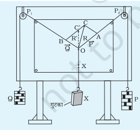
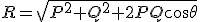

उद्देश्य
बलों के निकाय के लिए सदिश योग के समान्तर चतुर्भुज के नियम को सत्यापित करना।
आवश्यक सामग्री ( वास्तविक प्रयोग )
ग्रेवसैण्ड उपकरण, पक्का धागा , खांचेदार भार (दो सेट), सफ़ेद कागज़, पतली दर्पण पट्टिका, नुकीली पेन्सिल।
सिद्धांत

इस उपकरण का कार्य सदिश योग के समांतर चतुर्भुज नियम पर आधारित है। इस सिद्धांत के अनुसार, "जब किसी बिंदु पर एक ही क्षण में दो बल कार्य करते हैं और यदि इन्हें परिमाण एवं दिशा में किसी समांतर चतुर्भुज के दो संलग्न भुजाओं द्वारा निरूपित किया जाता है, तो इन बलों का परिणामी बल का परिमाण एवं दिशा दोनों में उस समांतर चतुर्भुज के विकर्ण द्वारा निरूपित किया जा सकता है। यह विकर्ण उन दोनों बलों के अनुप्रयुक्त बिंदु से गुजरता है।"
माना कि P तथा Q दो बल हैं, जो किसी बिंदु पर कोण θ बनाते हैं, तो इनका परिणामी बल R निम्नलिखित सूत्र द्वारा व्यक्त किया जाता है:
R= \sqrt{P^2 + Q^2 + 2PQ \cos \theta}
यदि दो ज्ञात बल P तथा Q दिए गए हों और उनके बीच का कोण θ ज्ञात हो, तो एक तीसरे अज्ञात बल को उसी बिंदु पर उसी प्रकार कार्य करते हुए संतुलन में रखा जा सकता है ( चित्र के अनुसार )। इस संतुलन की स्थिति में यह अज्ञात बल ज्ञात बलों के परिणामी के बराबर होता है। इस प्रकार, अज्ञात बल का भार ज्ञात किया जा सकता है।